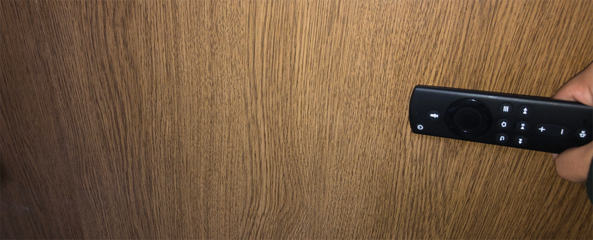

Zerosaka Diaryへようこそ。
Concept
Kore => OVER-SPEC na PERSONAL-SPACE desu.
But => koko ha MY-ROOM mitaina mono desu.
Dakarakoso => tamaniha VISIT sitekureru to uresiina:)
Now Testing...
- クエリによりダークモードのオンオフ状態を引き継ぐ機能の試験中です。
何かご要望があればTwitter(@zerosakamakoto)までお願いします。
My Antennas
Another Pages
Notifications

Consoles